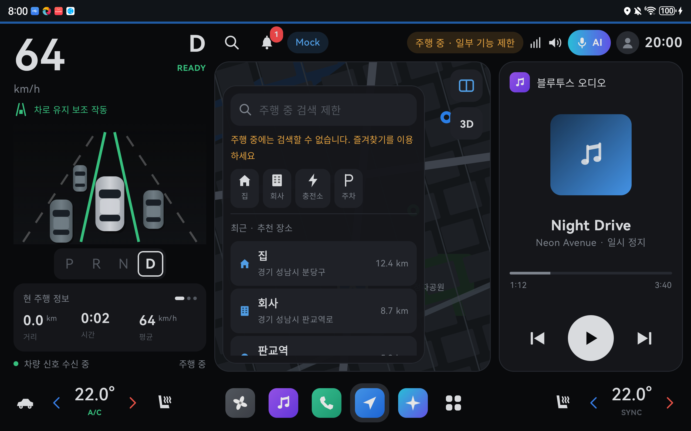

7단계 Pleos Connect 구조로 개편: 3영역 화면 · AI 어시스턴트 · 하단 공조 바
작성 2026-11-14. 현대차그룹의 차세대 인포테인먼트 Pleos Connect(42dot 개발, AAOS 기반)의 공개 화면과 기능을 참고해, 6단계 앱(내비·라디오·전화·설정·후방 카메라·음성)을 그 구조로 다시 짰다. 6단계 기능과 테스트 계약은 그대로 살렸다.
5단계와 같은 기준을 따랐다. 화면 구조와 기능 방향만 따르고, 제조사 로고·제품명·서비스명(글레오 등)·전용 글꼴·아이콘 파일·실제 지도 데이터는 쓰지 않는다.
아이콘은 Canvas로 직접 그린 단순한 기호(ui/Glyphs.kt), 앱 이름은 OpenCabin, 비서 이름은 'AI 어시스턴트'.
1. 참고한 것
| 출처 | 확인한 내용 |
|---|---|
| 사용자 제공 화면 사진 11장 (실차 화면, 보도 사진, SDK 구조도) | 왼쪽 주행 정보(속도·rpm·기어·주행 가능 거리·3D 주행 뷰·ECO·외기 온도), 오른쪽 앱(지도 + 블루투스 오디오 분할), 아래 바(차량 · ‹23.5› A/C · 김서림 · 열선 · 앱 타일 · 앱 목록 · 이전 앱 · 풍량 AUTO · ‹23.5› SYNC), 상단 바(검색 · 알림 · LTE · 볼륨 · BT · 프로필 · 시계), 음성 비서 대화 화면('운전석에서 듣는 중…', 번호 붙은 목적지 후보 카드), R 기어에서 주행 뷰가 붉게 |
| 현대차그룹 보도자료 (2026-04-30) | 주행 정보 화면 / 앱 화면 / 하단 바 3영역, 단일·분할 화면, 앱이 주행 정보 영역을 침범하지 않음, 아래에서 쓸어 올리면 전 좌석 공조, LLM 기반 음성 비서: 여러 명령 한 번에, 좌석 위치 인식, 간접 표현("더운데?"), 주행 상황에 따른 제한 |
| 오너스 매뉴얼, 화면 구성 | 용어: 주행 정보 화면 · 3D 주행 뷰 · 유틸리티 위젯(현 주행 정보 · 타이어 공기압 …) · 상단 바(상태 표시 영역) · 하단 바(차량 설정 · 공조 · 즐겨찾기 · 내비 · 앱 라이브러리 · 이전 실행 앱) |
| Hyundai newsroom (영문) | 하단 바는 최근·고정 앱을 한 번에, 개방형 앱 마켓 |
2. 무엇이 바뀌었나
| 영역 | 6단계 | 7단계 |
|---|---|---|
| 배치 | 상태 줄 · 왼쪽 속도 게이지 카드 · 오른쪽 앱 · 아래 탭 7개 | 왼쪽 주행 정보(전체 높이) · 오른쪽 위 상단 바 · 오른쪽 앱 화면 · 아래 하단 바 |
| 주행 정보 | 원형 속도 게이지, 기어 칸 | 큰 속도 숫자 + 단위(km/h·mph) · 기어 · READY · 운전자 보조 표시 · 경로 한 줄(다른 앱을 봐도 보임) · 원근 주행 뷰(D: 차선·주변 차, R: 붉은 빛, P: 내 차 크게) · P R N D · 유틸리티 위젯(현 주행 정보 / 경로 / 타이어 공기압, 누를 때마다 넘김) |
| 상단 바 | 시계 · 배지 · 음성 버튼 | 검색 · 알림(배지 + 알림 센터) · 데이터 소스 · 상태 · 음성 결과 · 신호·볼륨 · AI 버튼 · 프로필 · 시계(태블릿) |
| 하단 바 | 탭 7개 + 읽기 전용 온도 | 차량 · ‹운전석 온도›(A/C) · 열선 │ 공조 · 미디어 · 전화 · 내비 · AI · 앱 목록 │ 이전 실행 앱 │ 열선 · ‹조수석 온도›(SYNC). 온도는 어느 화면에서든 실제 VHAL 값을 바꾼다 |
| 홈 | 카드 4장 (내비·오디오·공조·전화) | 분할 화면: 내비 + 오디오(블루투스 음악 / 라디오), 지도 위 버튼으로 단일 ↔ 분할 |
| 내비 | 목록 화면 + 단순 격자 지도 | 가짜 도시 지도(강·공원·블록·큰길), 지도 위 검색 카드(집·회사·충전소·주차), 다음 안내 카드, 아래 경로 바(종료 · 도착 시각 · 남은 거리), 경로 색(원활 초록 / 서행 노랑) |
| 공조 | 좌석 2개 | 전 좌석 공조 패널: 좌석 온도 · A/C · AUTO · SYNC · 풍량 1~8 · 앞/뒤 김서림 · 좌석 열선 |
| 음성 | 고정 문장 4개 → 정해진 동작 | AI 어시스턴트: 규칙 기반 대화 엔진(아래 3장). 상단 AI 버튼 → '운전석에서 듣는 중…' 팝업, 하단 AI → 대화 화면 |
| 차량 | 없음 | 빠른 제어: 도어 잠금 · 사이드 미러 · 트렁크 · 차일드 락 · 실내등 · 운전석 열선 · 전조등(끔/자동/켬), 주행 중 미러 접기·트렁크 잠금 |
| 앱 목록 | 없음 | 앱 라이브러리 10개 (라디오·설정은 여기서), 영상은 주행 중 잠금, 앱 마켓은 '준비 중' |
| 후방 카메라 | 화면 전체를 덮음 | 앱 화면 위에만 (주행 정보는 R 기어 뷰로 계속 보임. 앱은 주행 정보 영역을 가리지 않는다) |
| 색 | 아쿠아 블루 | 거의 검정 + 회색 카드 + 파랑, 공조 화살표 파랑/빨강, 상태 글자 초록, 앱 타일 색 |

| 정차 · 분할 화면 | AI 어시스턴트 (목적지 후보) |
|---|---|
 |
 |
| 전 좌석 공조 | 빠른 제어 (주행 중 잠금) |
|---|---|
 |
 |
| 음성 팝업 | 후진 (R) |
|---|---|
 |
 |
내 차 그림 (아이오닉 3 참고)
주행 정보의 내 차는 아이오닉 3의 공개 제원·디자인을 참고해 Canvas로 직접 그렸다 (ui/CarArt.kt). 제조사 사진·이미지 파일은 쓰지 않는다.
| 근거 (공개 자료) | 그림에 반영 |
|---|---|
| 길이 4,155 · 폭 1,800 · 높이 1,505 · 휠베이스 2,680 mm, 19인치 225/45 R19 | 모든 좌표를 차 길이 비율로 계산 (차축 위치 0.177, 바퀴 지름 0.165) |
| '에어로 해치': 지붕선이 곧게 가다 리어 스포일러로 떨어짐 (Cd 0.263) | 옆모습 지붕선 · 스포일러 끝 |
| 픽셀 조명, 엠블럼 대신 모스 부호 'H' 점 4개 | 앞·뒤 픽셀 줄, 앞 가운데 점 4개 |
- P(정차): 옆모습을 크게. D(주행)·R(후진): 위에서 본 모습 (R이면 뒤 픽셀 조명이 밝아진다). 주변 차는 회색 일반 차.
- 출처: Hyundai newsroom, IONIQ 3, Electrifying, Morse 'H'
에뮬레이터 공조 값을 태블릿과 같게
에뮬레이터 VHAL은 켤 때마다 기본값(SystemUI 화씨 표시 61°, 좌석 16~17°C)으로 시작한다. 태블릿(Mock)은 22.0°C 섭씨다.
python tools/emulator_defaults.py가 운전석·조수석 22.0°C, 표시 단위 섭씨(HVAC_TEMPERATURE_DISPLAY_UNITS = 0x30)로 맞춘다.
- 이렇게 바꾸자 1단계 spike 테스트 4개가 실패했다: SystemUI 표시를 화씨로 가정하고
'77°','68°'를 기다리고 있었다. 표시 단위를 VHAL에서 읽어 기대 글자를 계산하게 고쳤다 (섭씨'25.0°', 화씨'77°'). 두 단위 모두에서 5 passed, 1 xfailed 확인. - 섭씨 글자(
22.0°)가 더 길어 시스템 바 운전석 온도가 홈 버튼과 더 많이 겹친다. 1단계에서 찾은 SystemUI 결함(xfail)은 그대로다.
3. AI 어시스턴트 (assistant/CabinAssistant.kt)
LLM 대신 규칙으로 공개된 동작 방식을 흉내 냈다. 화면(Compose)과 분리한 순수 Kotlin이라 JVM 단위 테스트로 검증한다.
말 ──split──▶ 절 여러 개 ──parse(절, 말한 좌석)──▶ Action ──run──▶ CabinControls ──▶ 차량 신호 / 앱 상태
"에어컨 켜고 음악 틀어줘" ["에어컨 켜", "음악 틀어줘"] SetAc(on) · Play Shell 이 구현 (VHAL · 6단계 CabinController)| 기능 | 예 | 결과 |
|---|---|---|
| 여러 명령 | "에어컨 켜고 음악 틀어줘 그리고 판교역으로 가자" | 세 동작을 차례로, 대답을 이어 붙임 |
| 좌석 인식(Zone) | 조수석에서 "나 더워" | 조수석만 1°C 내림 (좌석을 말하면 그 좌석, "모두"면 전 좌석) |
| 간접 표현 | "추운데" / "더워" | ±1.0°C |
| 숫자 · 범위 | "35도로 맞춰줘" | 28.0°C로 맞추고 범위를 알려 줌 (0.5°C 단위로 맞춤) |
| 목적지 후보 | "판교 가자" | 3곳(가까운 순) → 번호 카드 → 누르면 안내 시작 |
| 말 바꾸기 | "거기 말고 서울에 있는 데로 가자" | 서울역 |
| 주행 상황 제한 | 주행 중 "영상 틀어줘" / "사이드 미러 접어줘" | 거절 + 이유 (펴기는 됨) |
| 6단계 음성 4문장 | 온도 24도 · 라디오 · 집 안내 · 엄마에게 전화 | 같은 엔진으로 처리 (6단계 E2E 5개 그대로 통과) |
- 음성 인식은 하지 않는다. 대화 화면의 추천 명령(칩)을 누르거나 글자로 입력한다. 말한 좌석은 머리글의 '운전석/조수석'으로 고른다.
- 주행 중에는 글자 입력(키보드)을 막는다. 칩(음성 대신)은 계속 쓸 수 있다.
- 음성 팝업과 대화 화면은 같은 대화 내역을 쓴다.
4. 구조
ivi-app/app/src/main/java/dev/opencabin/ivi/
assistant/CabinAssistant.kt 말 → 동작 (Places 장소 목록 · IntentParser · CabinAssistant · CabinControls 경계)
state/CabinController.kt 6단계 그대로 (오디오 하나 · 내비 진행 · 전화). 목적지 = Places, 음성 결과 글자만 둠
ui/Shell.kt 3영역 틀, 상단 바, 하단 바, 음성 팝업, 통화, 알림, 후방 카메라, AI ↔ 차량 연결
ui/CockpitState.kt 화면 틀 상태: 탭 · 이전 앱 · 분할 · 공조 부가 · 빠른 제어 · 현 주행 정보 · 알림 · 대화
ui/Cluster.kt 주행 정보 (속도 · 주행 뷰 · 기어 · 위젯)
ui/Home.kt Navigation.kt 분할 화면, 지도·내비 흐름
ui/Climate.kt 전 좌석 공조 + 빠른 제어 + 앱 목록
ui/Assistant.kt Media.kt 대화 화면, 미디어
ui/Theme.kt Glyphs.kt 색 · 공통 부품, 직접 그린 기호
ivi-app/app/src/test/ CabinAssistantTest (JVM, 17개)- 공조의 A/C·풍량·열선·김서림, 빠른 제어는 에뮬레이터 VHAL에 연결하지 않은 화면 상태다 (
CockpitState). 8단계에서 공조 부가 기능과 도어 잠금을 차량 신호로 바꿨다 (phase8-signals.md). 미러·트렁크·차일드 락·실내등·전조등만 화면 상태로 남았다. SYNC만 실제 신호를 쓴다: 운전석 값을 조수석 HVAC_TEMPERATURE_SET에도 쓰고, 조수석을 직접 바꾸면 동기화가 풀린다. - 운전자 보조 표시와 주변 차량은 연출이다 (D에서 30 km/h 이상이면 '작동'). 실제 ADAS 신호가 아니다.
- 현 주행 정보(거리·시간·평균 속도)는 속도 신호를 1초마다 더한다. 정차 중에는 화면을 바꾸지 않는다 (UiAutomator 대기에 영향 없게).
5. 테스트
화면 객체(ivi/screens.py)가 바뀐 화면을 받아 줘서, 6단계 테스트 64개 중 고친 것은 1개다.
| 바뀐 것 | 테스트 쪽 대응 |
|---|---|
| 아래 바에서 라디오·설정·내비 탭이 빠짐 | IviApp.radio()/settings()는 앱 목록으로, navigation()은 내비(=홈)로 연다. 테스트 코드는 그대로 |
| 홈 카드의 온도 요약이 없어짐 | Home.summary_temperature()가 아래 바 온도('22.5°')를 읽는다. parse_celsius가 °도 받는다 (단위 테스트 1개 추가) |
| 홈의 내비 요약 카드가 없어짐 | test_stop_guidance_…home_widget → …clears_cluster_route : 다른 앱을 보고 있어도 주행 정보에 경로가 보이고 안내를 끝내면 사라진다 |
| 음성 결과 글자 | "운전석 온도를 24.0°C로 맞췄어요." 테스트는 '24.0' 포함만 보므로 그대로 통과 |
새 테스트 (E2E 20개, 앱 단위 17개)
| 파일 | 내용 |
|---|---|
test_assistant.py (6) |
좌석 인식 → 차량 신호(조수석만 21.0), 글자 입력 → VHAL 25.5, 한 문장 두 명령, 목적지 후보 고르기, 주행 중 입력 잠금 · 미러 접기 거절, 음성 팝업과 대화 내역 공유 |
test_cockpit.py (12) |
아래 바 온도 ↔ VHAL (좌석 2), SYNC → 조수석 VHAL, 조수석 조작 시 동기화 해제, 현 주행 정보가 속도 신호로 증가·정차 시 멈춤, 운전자 보조 표시, 위젯 넘김, 분할 ↔ 단일, 빠른 제어 주행 중 잠금, 알림 센터, 이전 실행 앱 |
test_smoke.py |
탭 열기에 AI · 빠른 제어 · 앱 목록 추가 (+3) |
ivi-app/src/test/CabinAssistantTest.kt (17) |
말 나누기, 좌석 인식, 간접 표현, 범위, 후보, 말 바꾸기, 주행 제한, 6단계 4문장, 없는 연락처, 공조 불가 |
CI: build 작업에 ./gradlew testDebugUnitTest를 넣었다.
6. 회귀에서 잡은 것
6-1) 안내 바의 목적지 글자에 앞 공백 (내가 만든 결함)
- 증상:
test_ambiguous_destination_offers_candidates에서nav_dest_name = '판교역'대기 실패. 실패 화면에서는 판교역으로 정상 안내 중. - 원인: 아이콘 옆 간격을 글자 앞 공백(
" 판교역")으로 만들었다. 6단계 계약은 정확히 같은 글자. - 해결: 간격은
padding으로. 같은 태그를 읽는 6단계 음성 테스트('집')도 같은 이유로 깨질 뻔했다.
6-2) 후보 카드가 대답을 화면 밖으로 밀어냄 (낮은 화면에서만)
- 증상: 위 테스트를 고친 뒤 '판교 가자' 대답(
assistant_reply)을 못 찾음. - 원인: 새 말이 오면 목록 끝으로 내리도록 바꿨는데, AAOS 에뮬레이터(1024×768, 시스템 바 제외 앱 높이가 작다)에서는 대답 + 후보 3장이 한 화면에 안 들어가 대답 글이 위로 밀려 나갔다. 화면 밖 요소는 UiAutomator가 찾지 못한다.
- 해결: 마지막 말의 시작으로 내리고, 후보 카드를 한 줄 높이로 줄여 대답과 같이 보이게 했다. 쓰는 사람 입장에서도 질문이 같이 보이는 편이 낫다.
6-3) 한글 경로에서 Gradle 단위 테스트 실행기가 죽음 (이 PC 환경)
./gradlew testDebugUnitTest가Could not write standard input to Gradle Test Executor로 실패. 사용자 폴더(Gradle 캐시)가 한글 경로라 테스트 JVM이 클래스 경로를 읽지 못한다 (README의 '영문 경로' 주의와 같은 문제).- 이 PC에서는 컴파일된 클래스를 영문 경로로 복사한 jar와 함께
java org.junit.runner.JUnitCore로 직접 돌렸다 (17 passed). CI(ubuntu)는 경로 문제가 없어 Gradle로 돈다. 근본 해결은GRADLE_USER_HOME을 영문 경로로 옮기는 것.
7. 결과
| 항목 | 결과 |
|---|---|
| 앱 빌드 | 경고 0 (Kotlin) |
앱 단위 테스트 (CabinAssistantTest) |
17 passed |
프레임워크 단위 테스트 (pytest unit) |
26 passed |
| AAOS 에뮬레이터 전체 E2E (84개) | 82 passed, 1 skipped, 1 xfailed, gate pass, 앱 재실행 0, VHAL 재시도 0 (5분 47초) |
| 화웨이 태블릿 (Mock) 전체 E2E (84개) | 78 passed, 6 skipped (AAOS 전용), gate pass, 앱 재실행 0 (5분 46초) |
- skipped 1: 12시간 시계 (AAOS는 시스템 바가 시계를 보여 줘서 앱 시계가 없다, 태블릿 전용). xfailed 1: 1단계에서 찾은 SystemUI 결함.
- 태블릿은 설치 전에 알리고 기기 화면에서 설치를 승인받은 뒤 돌렸다 (4단계 운영 규칙).
- 두 기기 병렬(
run_bench.py)·반복 안정성 측정은 아직 하지 않았다 (각 기기 1회씩 전체 실행).
태블릿(2560×1600)에서도 같은 배치가 늘어나 맞는다:
